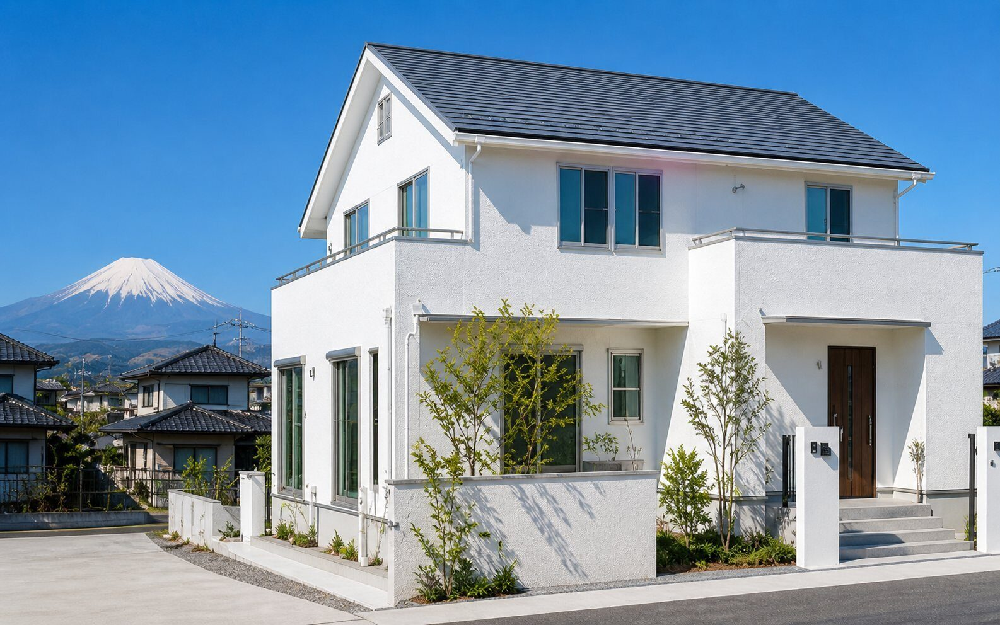
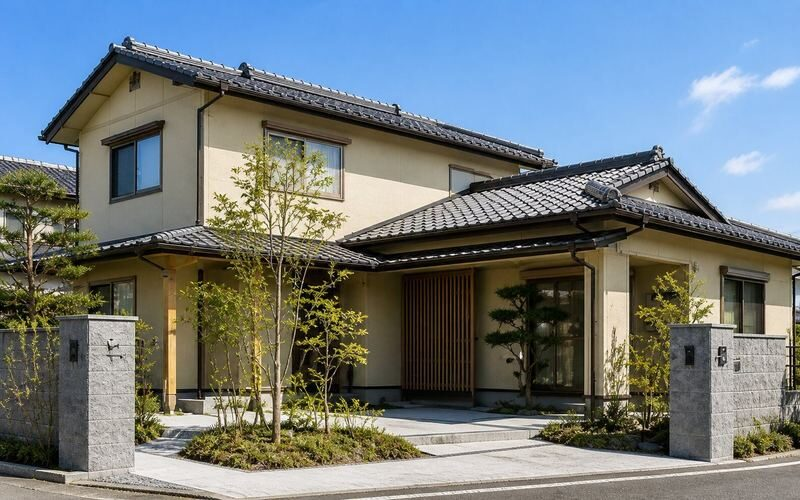
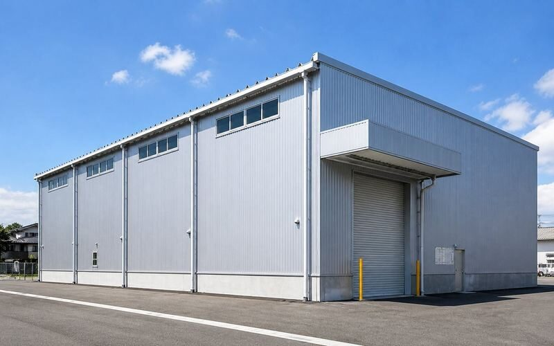
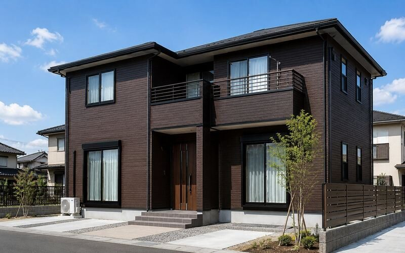
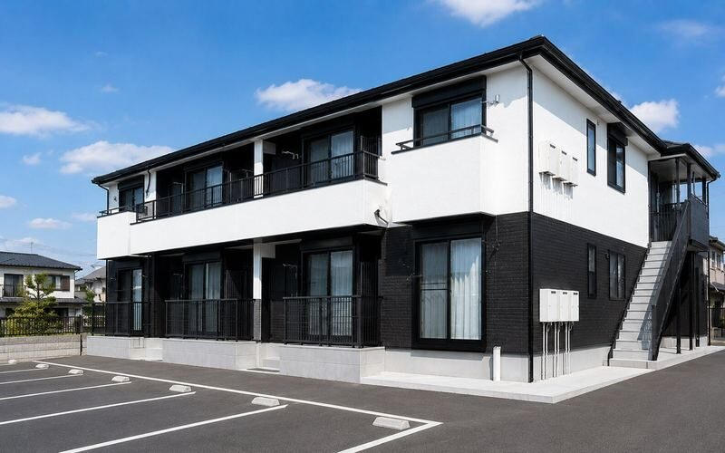
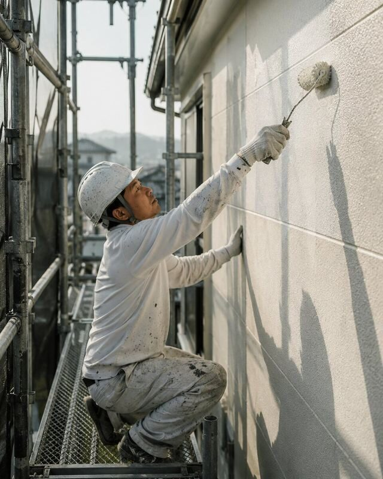
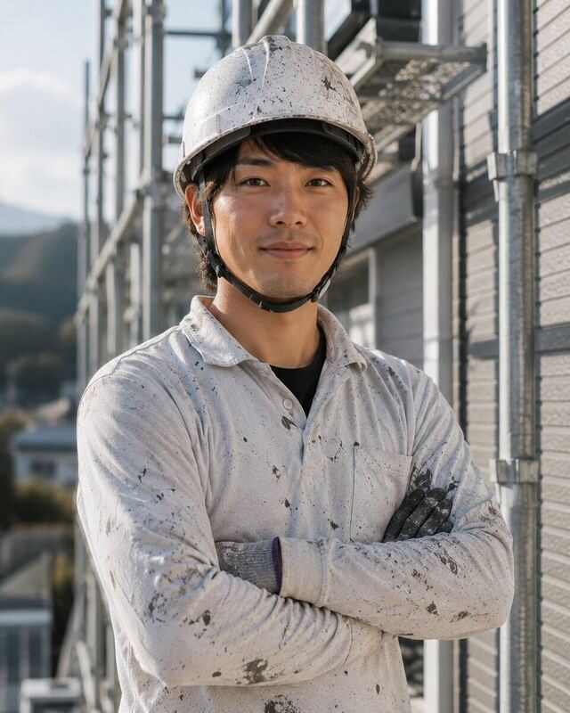
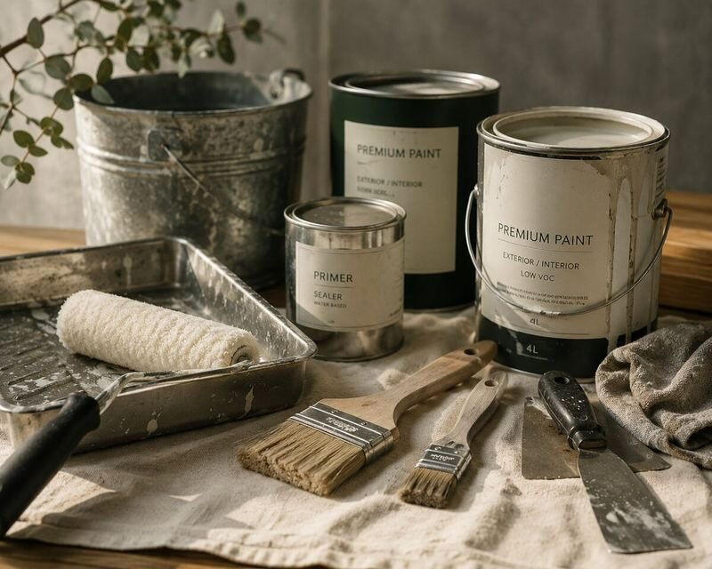
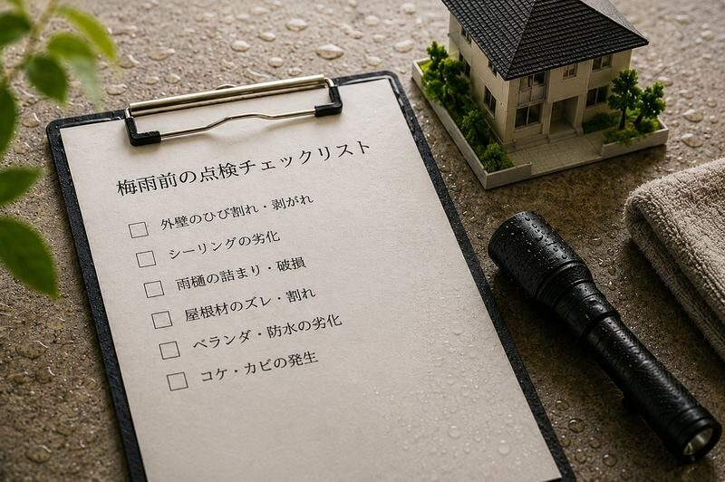

FOUNDER ・ 代表
岡野 雅彦Masahiko Okano
1級塗装技能士雨漏り診断士
「塗装は嘘をつきません。下地を丁寧にやれば10年後の塗膜が違う。それを伝えたくて創業しました。」
静岡県静岡市駿河区を拠点に、外壁塗装・屋根塗装・雨漏り診断を専門に手がけて十余年。
塗料を選び、職人を選び、未来の住まいに長く寄り添う一塗りを。

中央のラインを左右にドラッグしてみてください。
塗装前と塗装後、たった3週間で住まいがどう変わるか、その目で確かめていただけます。
富士市 S様邸 外壁塗装工事 ／ 工期 18日間 ／ 使用塗料 アステック・無機UVコート
塗り替えのサインは、住まいが静かに送る合図です。
気になる症状があれば、無料診断にてお気軽にご相談ください。
天井のシミ、壁のカビ、室内への水滴
外壁の小さな亀裂、塗膜の浮き
外壁ボード間の目地が痩せ、隙間が出来る
外壁・屋根の色味が褪せ、白っぽい粉が出る
外壁の北面に緑色の汚れが付着している
静岡市・富士市・沼津市を中心に、地域に根ざした施工事例を月ごとに更新。
ビフォーアフターから、職人の選定理由まで、一軒ずつ丁寧に。




塗装は、見えにくい工程ほど大切です。
足場の組み方、下地処理、ローラーの選定。
その一つ一つを、私たちは丁寧に見せていきます。
作業前の現場確認、足場の安全点検、
近隣への配慮。すべてを統括する眼。

ローラーの圧、塗料の含み加減、
気温と湿度の読み。職人の手が知っている。
塗装は、塗料の質も大切。けれど、それを塗る職人の腕と心がもっと大切。
VERDANT を支える職人たちをご紹介します。
※以下はデモ用の架空プロフィールです
「塗装は嘘をつきません。下地を丁寧にやれば10年後の塗膜が違う。それを伝えたくて創業しました。」
「お客様のお家を、自分の家だと思って塗ります。一軒一軒、一度きりの仕事ですから。」

「色の最終調整は、太陽の下で見てから決める。それが、お客様の毎日を作る色だから。」
「初めての塗装は、わからないことだらけ。お客様の不安に、最後まで寄り添います。」
VERDANT が厳選する3つの塗料グレード。
予算、耐久年数、お住まいの環境に合わせて、最適な一本をご提案します。
コストパフォーマンス重視の方へ。基本性能は十分、過不足のない一本。
最も選ばれている標準仕様。次の塗り替えまで安心、コストと耐久のバランス◎。
「人生最後の塗り替え」を望む方へ。一度塗れば長期間メンテ不要の最高峰。
2013年、地元静岡で塗装業を志した私たちが大切にしてきたのは、ただ一つ。 「塗ったら綺麗」ではなく「10年経っても綺麗」を作ること。
塗装は、見えない下地処理がすべてです。汚れを落とし、ヒビを埋め、プライマーを丁寧に。 この時間を惜しまない仕事が、10年先のお客様の安心を作ります。
派手なTVCMもキャンペーンも、私たちはやりません。
その代わり、職人ひとりひとりの腕に、誇りと責任を。
それが、VERDANT が選ばれ続ける理由です。
建物の階数・坪数・施工内容を選ぶだけで、概算のお見積り価格が即時算出されます。
正式なお見積もりは、現地調査の上であらためてご提示いたします。
下の選択肢を変えると、右側の金額がリアルタイムで変わります。
※ 足場代・諸経費を含む概算金額です。建物の状態により変動します。
職人の日々、塗料視察の記録、地域のこと。
VERDANT の「人」が見えるブログをお届けしています。

誠に勝手ながら、5/3〜5/6までGW休業とさせていただきます。お急ぎの方は…
海風と強い日差しの土地で、塗料はどう経年変化するのか。現地調査のレポート…
塗装で最も大切なのに、お客様には見えにくい下地処理工程をご紹介…

外壁のひび割れ、コーキングの劣化、雨樋の詰まり…梅雨入り前の必須点検項目を…
VERDANT の仕事は、施工が終わったら終わり、ではありません。
住宅瑕疵保険、長期保証、定期点検。安心の制度をご用意しています。
プレミアム以上は
10年間の塗膜保証付き
屋根工事には
5年雨漏り保証
無償の定期点検で
住まいに長く寄り添う
塗装技能士・雨漏り診断士・
屋根診断士在籍